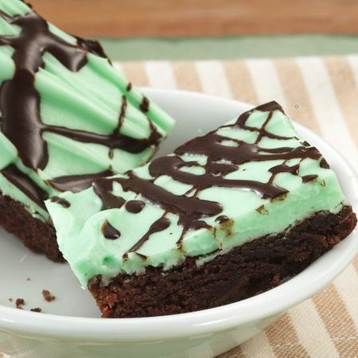

A simple yet delicious mint cheesecake recipie, on chocolate
crumble crust.

1 Eight Ounce Package of Cream Cheese
3/4 Cup All-Purpose Flour
1/3 Cup Sugar
1/3 Cup Unsweetened Cocoa Powder
6 Tablespoons Butter or Margarine
1/4 Cup Sugar
1 Egg
1/2 Teaspoon Peppermint Extract
4 or 5 Drops Green Food Coloring
1/4 Cup Milk
Place cream cheese in a small mixer bowl and let stand at
room temperature for about 30 minutes, or until softened.
Stir together flour, 1/3 cup sugar and cocoa powder. Cut in
butter or margarine till mixture resembles fine crumbs. Set
aaside 1 Cup of this mixture for topping. Press remaining
mixture onto the bottom of an ungreased 8x8x2 inch
baking pan. Bake in a 350° oven for 15 minutes.
Meanwhile, beat together softened cream cheese and 1/4 cup
sugar until fluffy. Add egg, peppermint extract and food
coloring abd beat well. Stir in milk. Spread over baked layer.
Sprinkle top with reserved crumbs. Return to the 350° oven
and bake for 20 ro 25 minutes or until done. Cool. Cut into
bars. Chill to store. Makes 25.